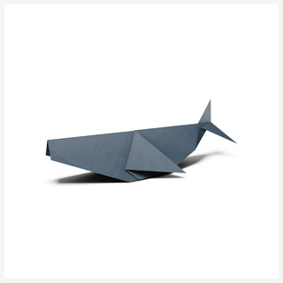

Animal Origami Designs
Paper Whale
Click the image below and begin making a paper whale

Some interesting facts about whales
The blue whale is the largest animal that ever lived and can grow to 90 or more feet and weigh as much as 24 elephants!
Gray whales make one of the longest annual migrations of any mammal: they travel about 10,000 miles (16,000 km) round trip!
Whales are mammals because they give birth to live young, they have fur (although it is very sparse on their body), they have lungs and breath air and they provide milk for their young.
Paper Turtle
Click the image below and begin making a paper turtle

Some interesting facts about turtles
Turtles have existed for around 215 million years.
Many turtle species (not all) can hide their heads inside their shells when attacked by predators.
Turtles also have a lower shell called a ‘plastron’
Sea turtles have special glands which help remove salt from the water they drink.